OSM no es un mapa, es una base de datos
- @xurxosanz
- Ingeniero en CartoDB
- Miembro de OSGeo
- Organizador en Geoinquietos Valencia
- Casual mapper en OSM
Antes de empezar....
Primera parte
Qué es OpenStreetMap
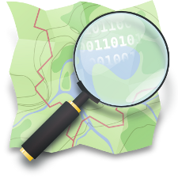Qué es OpenStreetMap
- Comunidad de entusiastas del
software y los datos libres - Proyecto para crear la mejor
base de datos geográfica mundial - ¿Un mapa en la red?
- ¡No! ¡Son muchos!
- Pero no solo mapas, también
un enorme ecosistema
de productos y servicios
Editar
Pero Google Maps...
- API: restricciones de uso, publicidad, ...
- MapMaker: «vuestro trabajo es nuestro»
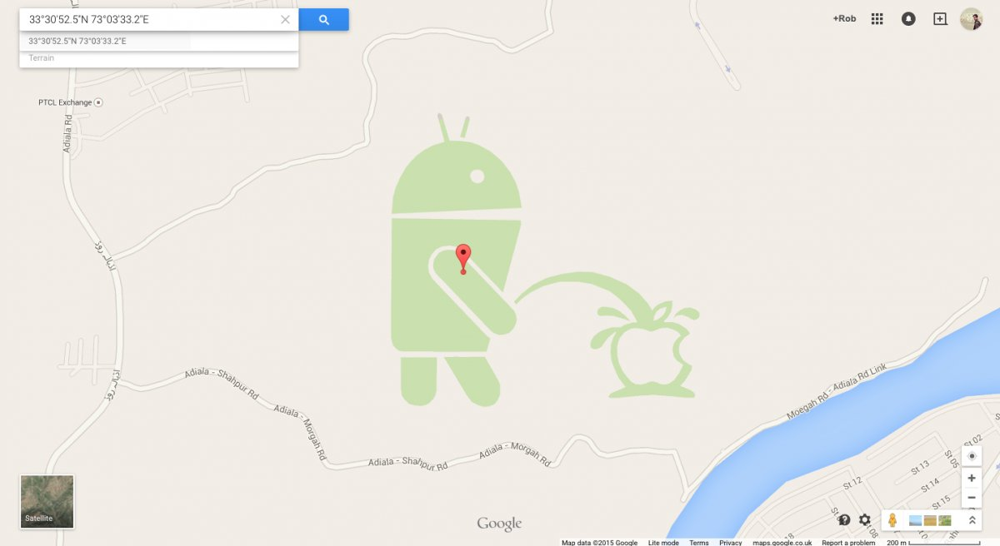
Open Database License
- Licencia de OSM desde septiembre 2012,
antes CC-BY-SA - Desarrollada por la OKFN
- En resumen:
- Puedes: compartir, crear, adaptar
- Siempre que: atribución, compartir-igual, siempre abierto
Historia 1/3
- 2004 - Steve Coast funda OpenStreetMap en respuesta a los altos precios de Ordnance Survey por su información
- 2006 - Nace la OpenStreetMap Foundation, fundación sin ánimo de lucro inscrita en el registro de Inglaterra
- 2006 - Yahoo! autoriza el uso de sus fotografías aéreas para la producción de mapas
- 2007 - Automotive Navigation Data dona su conjunto de datos de Países Bajos, India y China
- 2007 - Se completa la importación de datos sobre vías de TIGER (Censo de EEUU).
- 2007 - Se alcanzan los 9.000 usuarios registrados
Historia 2/3
- 2008 - CloudMade dona más de 2,4 millones de dólares a la OSMF
- 2008 - Se alcanzan los 45.000 usuarios registrados
- 2008 - GeoBase.ca dona su conjunto de datos de Canadá, el mayor hasta el momento
- 2009 - Versión 0.6 de la API. Se alcanzan los 200.000 usuarios
- 2010 - Terremoto de Haití. Sólo dos días después OSM se considera el "mapa digital de carreteras más completo de Haití"
- 2010 - Bing Maps permite el uso de sus imagenes.
Historia 3/3
- 2011 - >500.000 usuarios registrados. >1.000.000.000 nodos creados
- 2012 - Cambio a la licencia ODbl, Se lanza la campaña #switch2osm
- 2012 - Numerosas compañías adoptan OSM: Foursquare, Craiglist, Apple,...
- 2013 - Un millón de usuarios. Tras el tifón Yolanda la comunidad de OSM vuelve a demostrar su importancia para las organizaciones humanitarias
- 2014 - >1.500.000 usuarios. Constantes artículos en prensa mainstream
- 2015 - Se alcanzan los dos millones de usuarios
Números
A 22 de junio de 2015:
- 2,1M usuarios
- 4.719M puntos GPS
- 2.926M nodos
- 295M líneas
- 3,5M relaciones
- Fuente
Comparemos...

Fuente: GeoFrabrik Tools
Fuente: GeoFrabrik Tools
Fuente: GeoFrabrik Tools
Fuente: GeoFrabrik Tools
HOT
Humanitarian OpenStreetMap Team
- Se organiza a partir del terremoto de Haití
- Se realizan trabajos de formación en zonas necesitadas
- La mayor parte del trabajo es remoto
- Actualmente trabajando en Nepal, Malawi, Indonesia, Nigeria, ...

Tacloban ·
wiki · mapa de cambios
¡4.8M de cambios en la base de datos en 2/3 semanas!
Segunda parte
Cómo contribuir a OSM

Flujo de trabajo
- Recoger datos
- Subirlos a OSM
Tomando datos con GPS

Field Papers

Mapping party

Preparando los equipos
Mapping party
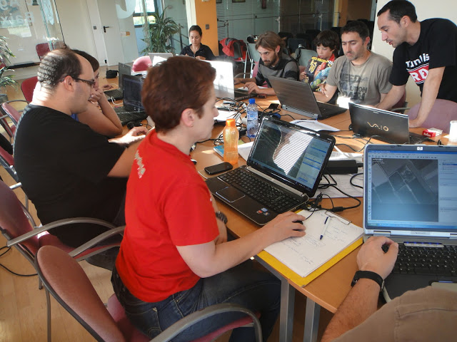De vuelta a editar
Editores de datos OSM
- iD
- JavaScript (d3js)
- directamente en la web de OSM
- para editores casuales
- JOSM
- escritorio, Java
- mucha funcionalidad, plugins, etc
- para editores avanzados
- ... hay muchos más (incluso para teléfonos y tabletas)
Escuela de Bellas Artes en JOSM
Tercera parte
Los datos en OSM
El modelo de datos de OSM
- Topológico, diferente del modelo features
- Primitivas gráficas
- Nodos
- Vías (si se cierran pueden ser un área)
- Atributos alfanuméricos
- Relaciones
- Etiquetas
Etiquetas
- Dan semántica a las primitivas gráficas
y relaciones - Definidas por la comunidad en el wiki
Nodos
- Atributos importantes: identificador, latitud y longitud, usuario que creó el nodo y versión
- Contenido: etiquetas
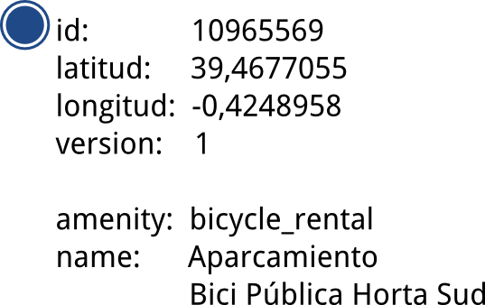
<node id="1035862914" visible="true" version="1"
changeset="6637923" timestamp="2010-12-12T16:07:17Z"
user="Schumi4ever" uid="83942"
lat="36.8371080" lon="-2.4644590">
<tag k="natural" v="tree"/>
</node>
Vías
- Atributos: identificador, usuario, versión
- Contenido: lista de nodos y etiquetas
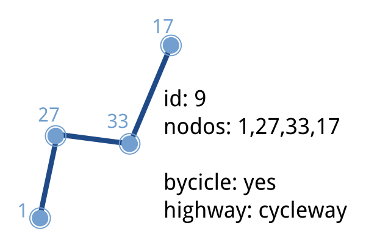
<way id="159010347" visible="true" version="2"
changeset="21196864" timestamp="2014-03-19T18:09:16Z"
user="XuRxO" uid="13409">
<nd ref="1711177810"/> <nd ref="1711177809"/>
<-- más nodos... -->
<nd ref="1711177808"/> <nd ref="1711177812"/>
<nd ref="1711177810"/>
<tag k="addr:city" v="Almería"/>
<tag k="addr:postcode" v="04001"/>
<tag k="addr:street" v="Plaza Pablo Cazard"/>
<tag k="amenity" v="college"/>
<tag k="building" v="school"/>
<tag k="name" v="Escuela de Bellas Artes"/>
<tag k="phone" v="+34950156158"/>
<tag k="website" v="http://www.andalucia.org/...."/>
</way>
Relaciones
- Atributos: id, visible, usuario y timestamp
- Contenido
- Miembros: id, tipo y rol en la relación
- Etiquetas
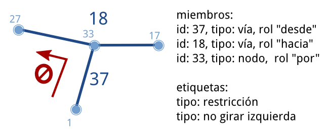
<relation id="2545358" visible="true" version="9" ...>
<member type="node" ref="2306864392" role="stop"/>
<member type="node" ref="2306864403" role="stop"/>
<!-- más paradas ... -->
<member type="way" ref="204274848" role="forward"/>
<member type="way" ref="23290865" role="forward"/>
<!-- más vías ... -->
<tag k="colour" v="black"/>
<tag k="name" v="Casco Histórico"/>
<tag k="operator" v="SURBUS"/>
<tag k="ref" v="1"/>
<tag k="route" v="bus"/>
<tag k="type" v="route"/>
<tag k="wheelchair" v="yes"/>
</relation>
Cuarta parte
OSM para desarrolladores

La API de OSM
- Único medio de modificar datos
- v0.6 desde 2009
- RESTful
- Consultas anónimas,
actualizaciones por OAuth - Soporte de versionado
- Descargas limitadas
a cuadrados de 15' - No está enfocada a consulta, sino a edición
<osm version="0.6" generator="OpenStreetMap server">
<api>
<version minimum="0.6" maximum="0.6"/>
<area maximum="0.25"/>
<tracepoints per_page="5000"/>
<waynodes maximum="2000"/>
<changesets maximum_elements="50000"/>
<timeout seconds="300"/>
</api>
</osm>
<osm version="0.6" generator="OpenStreetMap server">
<node id="933346497" lat="41.5827283" lon="2.013415"
version="3" changeset="8211372" user="Jaume Figueras"
uid="55987" visible="true" timestamp="2011-05-21T22:26:13Z">
<tag k="ref" v="FIXME"/>
<tag k="network" v="Xarxa d'autobusos Urbans de Terrassa"/>
<tag k="covered" v="no"/>
<tag k="tactile_paving" v="yes"/>
<tag k="bench" v="yes"/>
<tag k="public_transport" v="platform"/>
<tag k="highway" v="bus_stop"/>
<tag k="uic_ref" v="FIXME"/>
<tag k="uic_name" v="FIXME"/>
<tag k="name" v="Arenys de Mar"/>
<tag k="shelter" v="yes"/>
<tag k="operator" v="TMESA"/>
<tag k="layer" v="0"/>
</node>
</osm>
<osm version="0.6" generator="OpenStreetMap server">
<node id="933346497" lat="41.5827339" lon="2.0134288" changeset="5928981"
user="Jaume Figueras" uid="55987" visible="true" timestamp="2010-10-01T15:46:00Z" version="1">
<tag k="highway" v="bus_stop"/>
<tag k="shelter" v="yes"/>
<tag k="name" v="Arenys de Mar"/>
<tag k="tactile_paving" v="yes"/>
<tag k="bench" v="yes"/>
</node>
<node id="933346497" lat="41.5827339" lon="2.0134288" changeset="8167041"
user="Jaume Figueras" uid="55987" visible="true" timestamp="2011-05-16T21:38:38Z" version="2">
<tag k="highway" v="bus_stop"/>
<tag k="shelter" v="yes"/>
<tag k="network" v="Xarxa d'autobusos Urbans de Terrassa"/>
<tag k="name" v="Arenys de Mar"/>
<tag k="ref" v="FIXME"/>
<tag k="uic_name" v="FIXME"/>
<tag k="tactile_paving" v="yes"/>
<tag k="layer" v="0"/>
<tag k="covered" v="no"/>
<tag k="public_transport" v="platform"/>
<tag k="uic_ref" v="FIXME"/>
<tag k="bench" v="yes"/>
<tag k="operator" v="TMESA"/>
</node>
<node id="933346497" lat="41.5827283" lon="2.013415" changeset="8211372"
user="Jaume Figueras" uid="55987" visible="true" timestamp="2011-05-21T22:26:13Z" version="3">
<tag k="highway" v="bus_stop"/>
<tag k="shelter" v="yes"/>
<tag k="network" v="Xarxa d'autobusos Urbans de Terrassa"/>
<tag k="name" v="Arenys de Mar"/>
<tag k="ref" v="FIXME"/>
<tag k="uic_name" v="FIXME"/>
<tag k="tactile_paving" v="yes"/>
<tag k="layer" v="0"/>
<tag k="covered" v="no"/>
<tag k="public_transport" v="platform"/>
<tag k="uic_ref" v="FIXME"/>
<tag k="bench" v="yes"/>
<tag k="operator" v="TMESA"/>
</node>
</osm>
<osm version="0.6" generator="OpenStreetMap server">
<changeset id="8211372" user="Jaume Figueras"
uid="55987" created_at="2011-05-21T22:26:04Z"
closed_at="2011-05-21T22:26:17Z" open="false"
min_lat="41.5617613" min_lon="2.0082875"
max_lat="41.5859881" max_lon="2.0241229">
<tag k="comment" v="Bus de Terrassa - Línia 7 adaptada al nou esquema i arranjaments varis"/>
<tag k="created_by" v="JOSM/1.5 (4064 en)"/>
</changeset>
</osm>
<?xml version="1.0" encoding="UTF-8"?>
<osm version="0.6" generator="CGImap 0.0.2">
<bounds minlat="41.5617613" minlon="2.0082875"
maxlat="41.5859881" maxlon="2.0241229"/>
<node id="282873786" lat="41.5803041" lon="2.0268698"
user="Jaume Figueras" uid="55987" visible="true"
version="5" changeset="1576508" timestamp="2009-06-20T17:59:37Z">
<tag k="highway" v="traffic_signals"/>
</node>
<node id="282873797" lat="41.5805069" lon="2.0266905"
user="Jaume Figueras" uid="55987" visible="true"
version="6" changeset="5858775" timestamp="2010-09-23T23:30:09Z">
<tag k="highway" v="traffic_signals"/>
</node>
....
http://api.openstreetmap.org/api/0.6/map?bbox=2.0082875,41.5617613,2.0241229,41.5859881
1.6MB de descarga
Actualización de datos
- PUT /api/0.6/changeset/create
- PUT /api/0.6/changeset/#id/close
- PUT /api/0.6/[N|W|R]/create
- DELETE /api/0.6/[N|W|R]/#id
Otras consultas
- GET /api/0.6/[N|W|R]/#id/relations
- GET /api/0.6/node/#id/ways
- GET /api/0.6/[W|R]/#id/full
Cómo añadir las teselas de OSM a nuestros proyectos
OpenLayers 2
- http://openlayers.org/
- Librería madura y amplia
- Gran soporte de protocoles y formatos
- No muy buena para móviles
(build personalizado) - Ejemplo
OpenLayers 3
- http://ol3js.org/
- Profundo refactoring, en pre-release
- Optimizada para móviles
- Uso de Canvas, WebGL
- Más fácil de personalizar la GUI
- Ejemplo
Leaflet
- http://leafletjs.com/
- Librería pequeña y rápida
- Óptima para móviles
- Plugins de terceros
- Ejemplo
Servicios derivados de la base de datos
- El principal producto derivado es el
planet
- Toda la base de datos: 33GB en un XML comprimido
- Incrementales por semana, día, hora y minuto
- Overpass API está indicada para consultas
- Interfaz para definir consultas: Overpass Turbo
- taginfo: API de estadísticas de uso de etiquetas
- Nominatim: geocodificador
- No oficial pero destacable es OSRM (demo)
Renderizados
Quinta parte
¿A quién no le gustan son los mapas?
Oficial
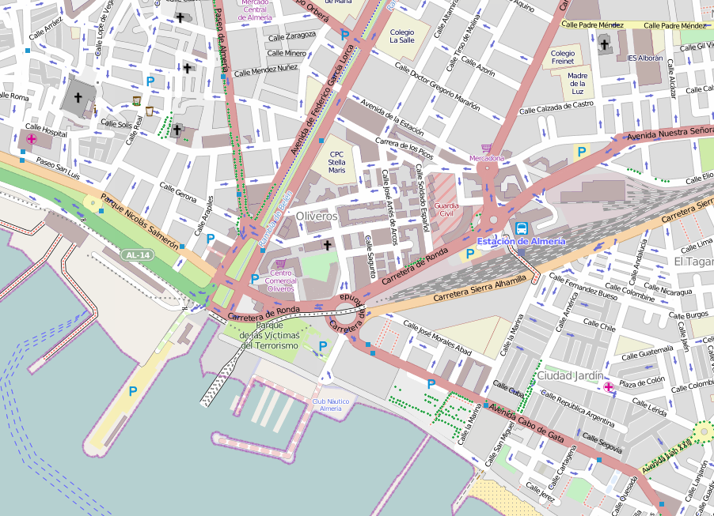Ciclismo
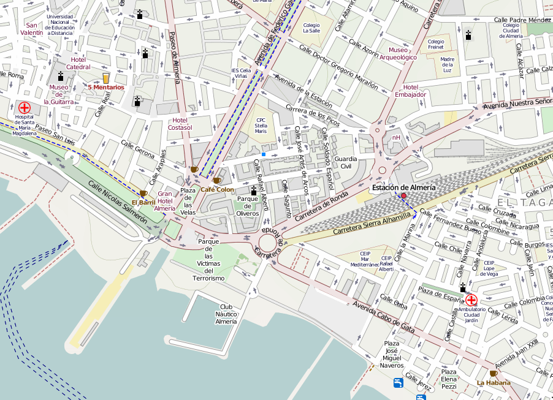Transporte
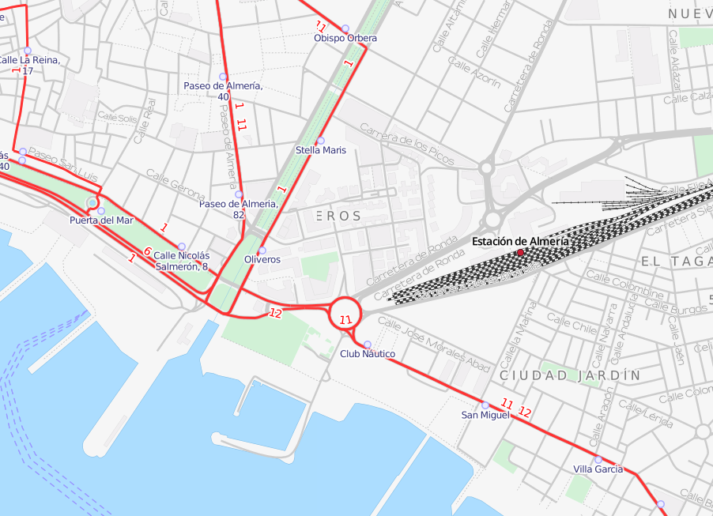HOT
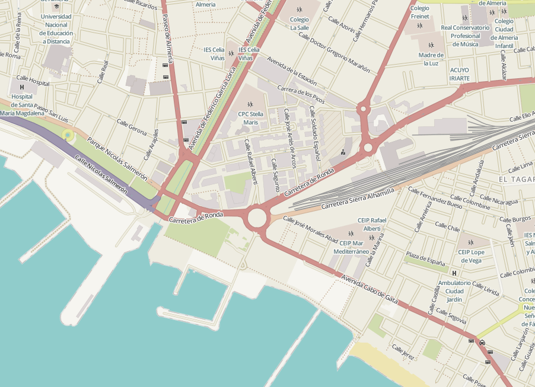Pero esto solo es el principio
Stamen
Watercolor
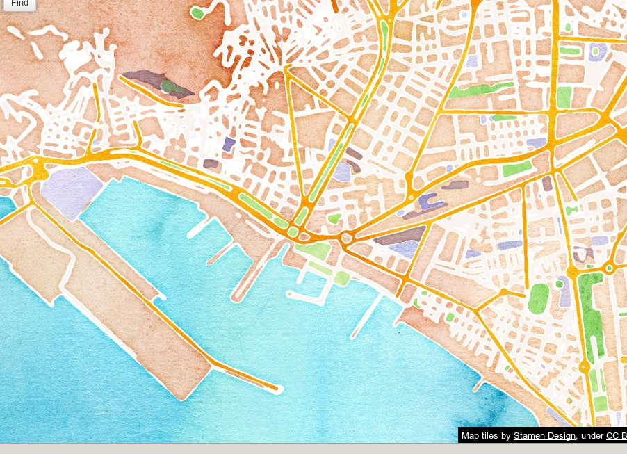Toner
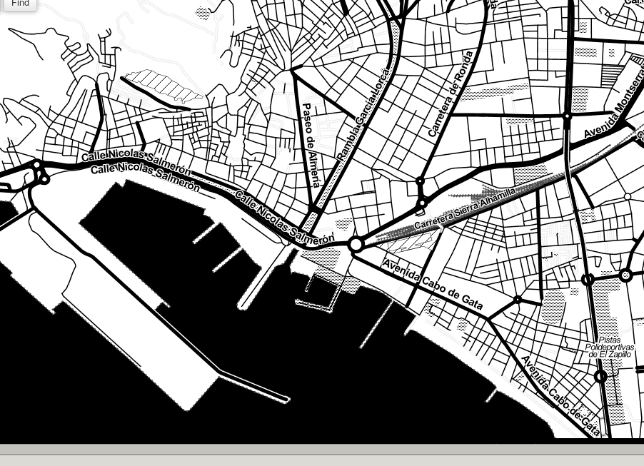Mapbox
Estilo para Pinterest
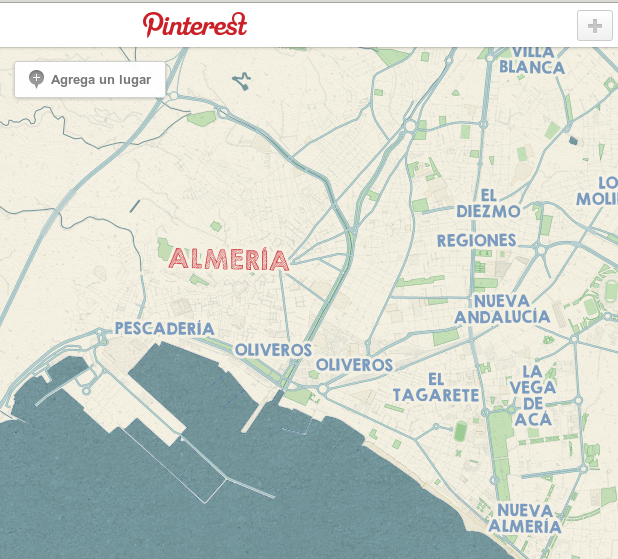Estilo para Foursquare
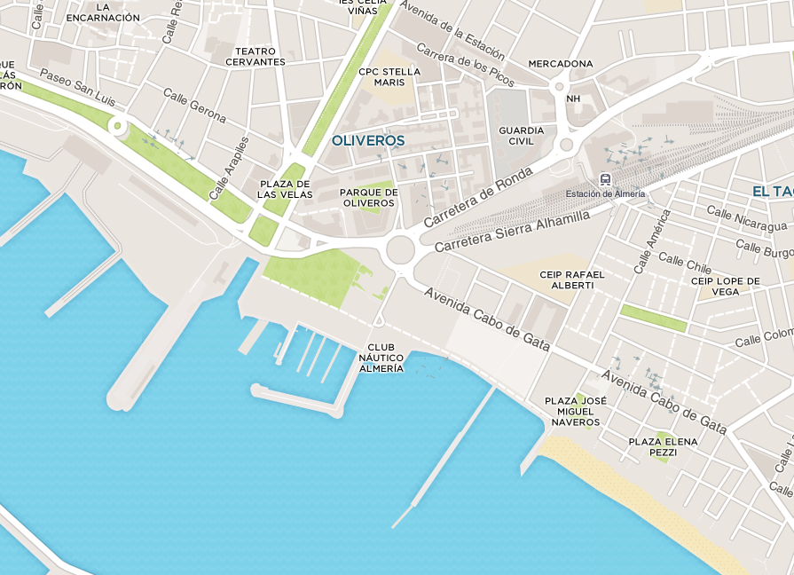Random
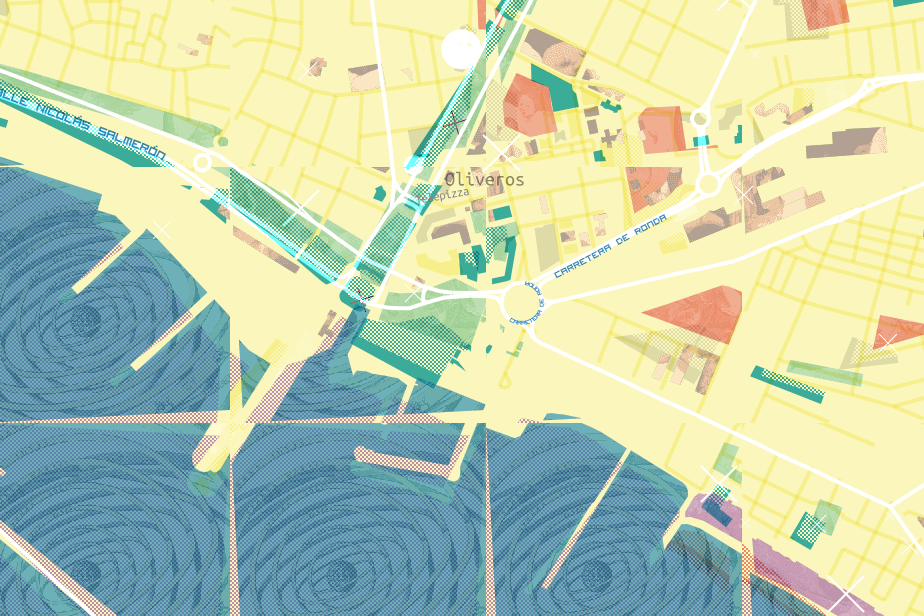CartoDB
Positron
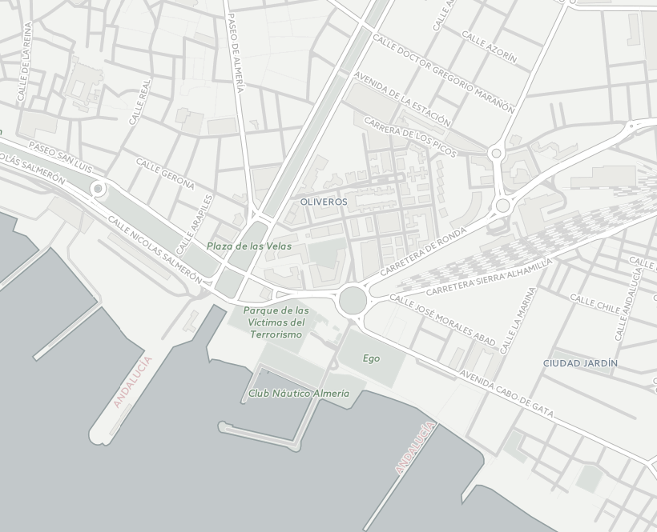Dark Matter
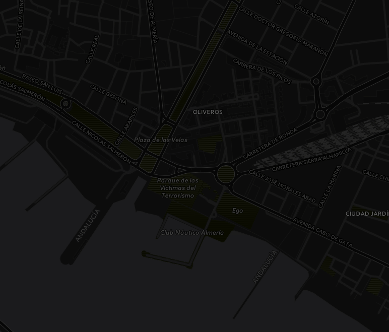¡Gracias!
Jorge Sanz · @xurxosanz
Enlaces y referencias
http://bit.ly/jsanz-osm

Licencia
OSM no es un mapa, es una base de datos by Jorge Sanz is licensed under a Creative Commons Attribution-ShareAlike 4.0 International License.